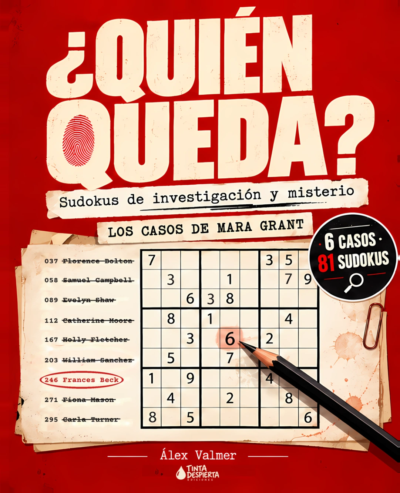
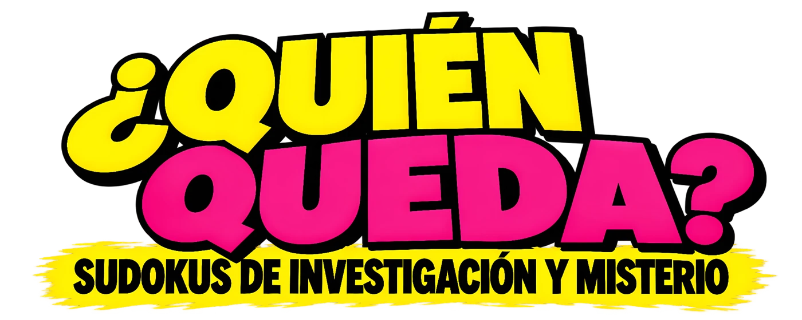
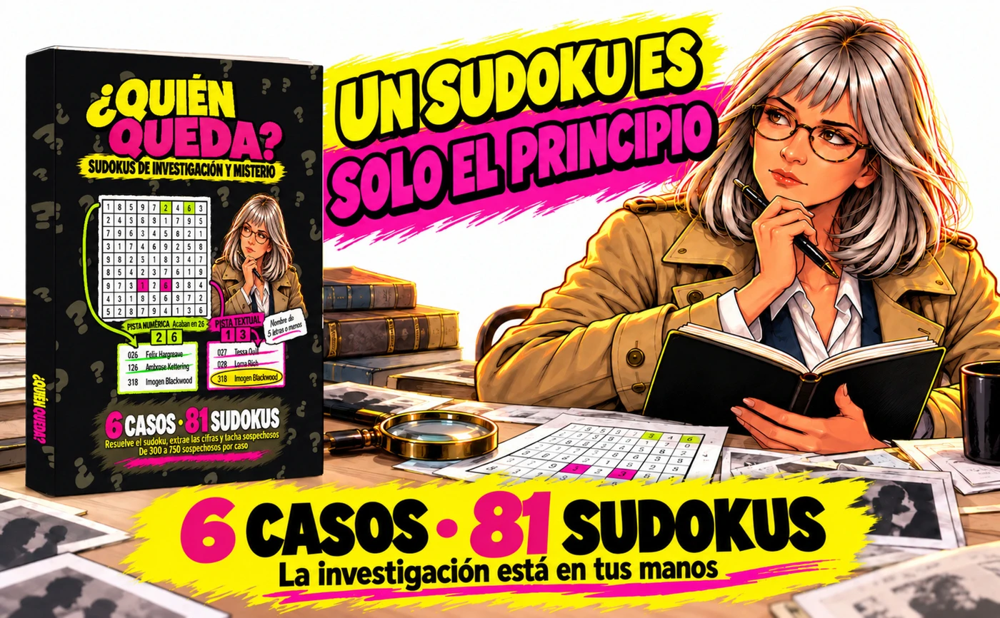

Resuelve
Completa el sudoku y lee las cifras de sus casillas sombreadas.
Somos Tinta Despierta Ediciones. Creamos libros para jugar con la lógica y disfrutar del misterio en papel.
Abre un expediente. Coge un lápiz. Descubre quién queda.
Nuestro primer libro · ¿Quién queda? · Álex Valmer


Un sudoku resuelto. Una nueva pista. Unos cuantos sospechosos menos.
Acompaña a Mara Grant en seis misterios y aplica cada pista hasta identificar al responsable o a los responsables.
Abre el expediente →
Completa el sudoku y lee las cifras de sus casillas sombreadas.
Utiliza las cifras para completar una acción numérica o encontrar una pista textual.
Tacha en el panel a quienes cumplan la condición. La investigación continúa.